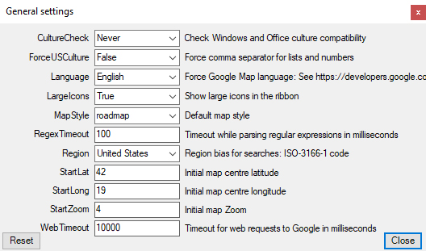

Modify general Geodesix settings
| CultureCheck | When the Windows language and the Office language differ, problems can occur with number/date formatting. Setting Language or Culture makes Geodesix check conficting values at startup |
| Force US culture | Used to resolve language/culture mismatches |
| Language | Forces the language for Google interactions (map names etc.) |
| LargeIcons | Makes the ribbon icons bigger |
| MapStyle | Sets the default style for maps |
| RegexTimeout | Sets the timeout when evaluating Regular Expressions |
| Region | Forces the region bias for Google interactions. Searching for Paris might yield Paris, France or Paris, Texas depending on the region of your computer |
| StartLat | Sets the default latitude of the centre of a map when it is first displayed |
| StartLong | Sets the default longitude of the centre of a map when it is first displayed |
| StartZoom | Initial zoom factor of a map when it is first displayed |
| WebTimeout | Sets the default timeout when making requests to Google |